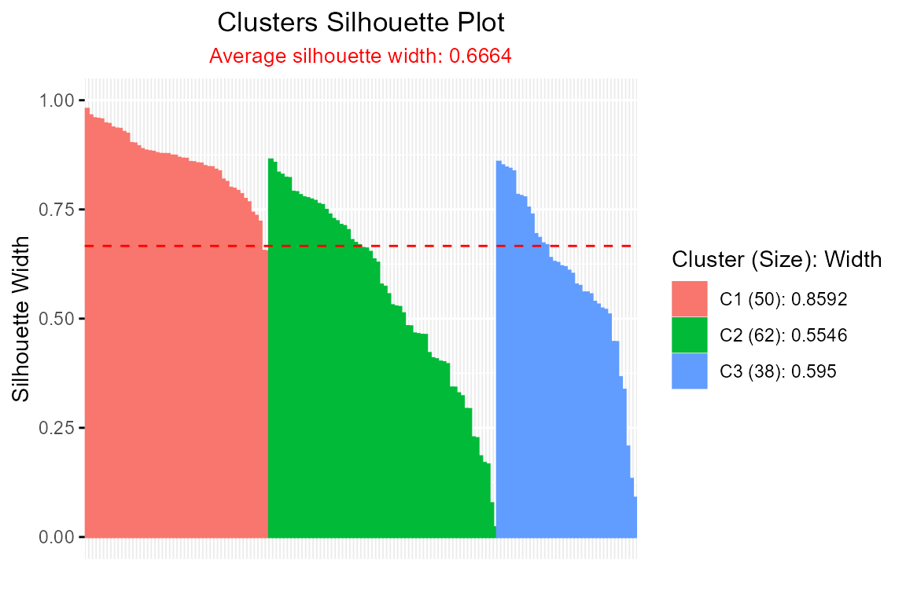
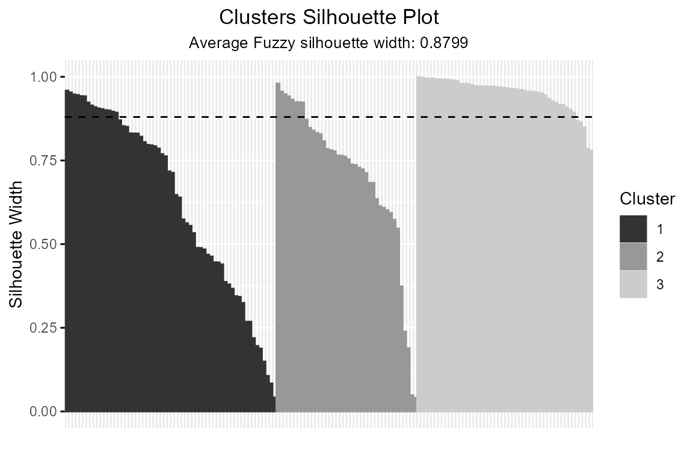
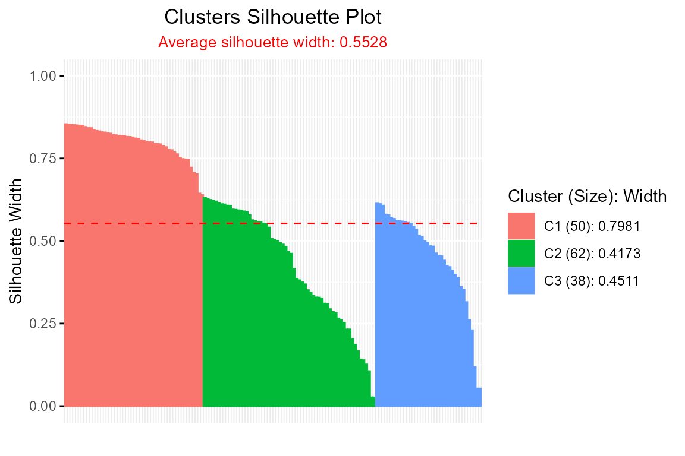

Silhouette PackageSilhouette.RmdSilhouettes are widely used for validating clusters (Rousseeuw 1987).
Extensions have been proposed for soft clustering (Campello and Hruschka 2006; Bhat Kapu and Kiruthika
2024).
More recent developments also apply silhouettes to neural networks (Raymaekers and Rousseeuw 2022).
A new PAM algorithm was introduced by Van der Laan et al. [Van der Laan, Pollard, and Bryan (2003)](Schepers, Ceulemans, and Van Mechelen
2008).
The Silhouette package provides a flexible framework for
computing and visualizing silhouette widths to evaluate clustering
quality in both crisp (hard) and soft
(fuzzy/probabilistic) clustering scenarios. Silhouette width, introduced
by Rousseeuw (1987), measures how similar an observation is to its
assigned cluster compared to the nearest neighboring cluster, with
values ranging from -1 (poor clustering) to 1 (well-separated clusters).
The package extends traditional silhouette methods by:
ppclust::fcm).medoid or
pac (Probability of Alternative Cluster) calculations.extSilhouette() for biclustering or tensor clustering.plotSilhouette(), including grayscale options and detailed
legends. Integrating with clustering outputs from packages like
cluster (pam, clara,
fanny) and factoextra (eclust,
hcut).This vignette demonstrates key functionalities using the
iris dataset, showcasing crisp and fuzzy silhouette
calculations, visualization, and extended silhouette analysis for
multi-way clustering.
Silhouette(): Computes silhouette
widths for crisp or fuzzy clustering using proximity matrices.softSilhouette(): Computes silhouette
widths for soft clustering using membership probabilities.extSilhouette(): Calculates extended
silhouette width for multi-way clustering (e.g., biclustering).plot() and
plotSilhouette(): Visualizes silhouette widths as
bar plots, with options for grayscale and legend customization.summary(): Summarizes average
silhouette widths and cluster sizes for Silhouette
class.Compute silhouette widths for a k-means clustering of the
iris dataset using a dissimilarity matrix.
library(proxy)
data(iris)
km <- kmeans(iris[, -5], centers = 3)
dist_matrix <- proxy::dist(iris[, -5], km$centers)
sil <- Silhouette(
prox_matrix = dist_matrix,
proximity_type = "dissimilarity",
method = "medoid"
)
#> -----------------------------------------------
#> Average dissimilarity medoid silhouette: 0.6664
#> -----------------------------------------------
#> cluster size avg.sil.width
#> 1 1 50 0.8592
#> 2 2 62 0.5546
#> 3 3 38 0.5950
#>
#> Available attributes:
#> [1] "names" "class" "row.names" "proximity_type"
#> [5] "method"
summary(sil)
#> -----------------------------------------------
#> Average dissimilarity medoid silhouette: 0.6664
#> -----------------------------------------------
#> cluster size avg.sil.width
#> 1 1 50 0.8592
#> 2 2 62 0.5546
#> 3 3 38 0.5950
plot(sil)
Output: The summary() call displays a
table of cluster sizes and average silhouette widths, with the overall
average silhouette width indicating clustering quality. The
plot() creates a bar plot where each bar represents an
observation’s silhouette width, colored by cluster, with a dashed line
showing the average silhouette width.
For soft clustering, softSilhouette() uses membership
probabilities (e.g., from ppclust::fcm) to compute fuzzy
silhouette widths.
library(ppclust)
data(iris)
fcm_result <- ppclust::fcm(iris[, 1:4], centers = 3)
sil_fuzzy <- softSilhouette(
prob_matrix = fcm_result$u,
prob_type = "pp",
method = "pac",
average = "fuzzy",
a = 2
)
#> -----------------------------------------------
#> Average fuzzy similarity pac silhouette: 0.8799
#> -----------------------------------------------
#> cluster size avg.sil.width
#> 1 1 60 0.8080
#> 2 2 40 0.8083
#> 3 3 50 0.9565
#>
#> Available attributes:
#> [1] "names" "class" "row.names" "proximity_type"
#> [5] "method"
plot(sil_fuzzy, grayscale = TRUE, summary.legend = FALSE)
Output: The plot shows silhouette widths for each
observation, sorted by cluster and descending width, in grayscale. The
legend displays cluster numbers without summary statistics
(summary.legend = FALSE).
A scree plot helps identify the optimal number of clusters by
plotting average silhouette widths for different k.
library(ppclust)
library(ggplot2)
data(iris)
avg_sil_width <- numeric(6)
for (k in 2:7) {
sil <- Silhouette(
prox_matrix = "d",
proximity_type = "dissimilarity",
prob_matrix = "u",
clust_fun = fcm,
x = iris[, 1:4],
centers = k,
print.summary = FALSE,
sort = TRUE
)
avg_sil_width[k-1] <- summary(sil, print.summary = FALSE)$avg.width
}
df <- data.frame(k = 2:7, avg_sil_width = avg_sil_width)
df
#> k avg_sil_width
#> 1 2 0.9567317
#> 2 3 0.9297577
#> 3 4 0.8758305
#> 4 5 0.9156653
#> 5 6 0.9125127
#> 6 7 0.8448206
ggplot(df, aes(x = k, y = avg_sil_width)) +
geom_line() +
geom_point() +
labs(x = "Number of Clusters", y = "Average Silhouette Width", title = "Scree Plot for FCM Clustering") +
theme_minimal()
Output: The scree plot shows average silhouette
widths for k = 2 to 7, helping identify the
number of clusters with the highest silhouette width.
The package supports clustering outputs from
cluster::pam, clara, fanny,
factoextra::eclust, and hcut.
library(cluster)
data(iris)
pam_result <- pam(iris[, 1:4], k = 3)
plotSilhouette(pam_result, label = FALSE, grayscale = FALSE)
Output: The silhouette plot visualizes the
clustering quality of pam, with bars colored by cluster and
sorted by silhouette width.
extSilhouette() computes an extended silhouette width
for multi-way clustering (e.g., biclustering) by combining silhouette
widths from multiple modes.
library(blockcluster)
data(iris)
result <- coclusterContinuous(as.matrix(iris[, -5]), nbcocluster = c(3, 2))
#> Co-Clustering successfully terminated!
sil_mode1 <- softSilhouette(
prob_matrix = result@rowposteriorprob,
method = "pac",
print.summary = FALSE
)
sil_mode2 <- softSilhouette(
prob_matrix = result@colposteriorprob,
method = "pac",
print.summary = FALSE
)
ext_sil <- extSilhouette(
sil_list = list(sil_mode1, sil_mode2),
dim_names = c("Rows", "Columns")
)
#> ---------------------------
#> Extended silhouette: 0.9325
#> ---------------------------
#>
#> Dimension Summary:
#> dimension n_obs avg_sil_width
#> 1 Rows 150 0.9307
#> 2 Columns 4 1.0000
#>
#> Available components:
#> [1] "ext_sil_width" "dim_table"Output: The extSilhouette() function
returns the extended silhouette width and a dimension table summarizing
the number of observations and average silhouette width for each mode
(rows and columns).